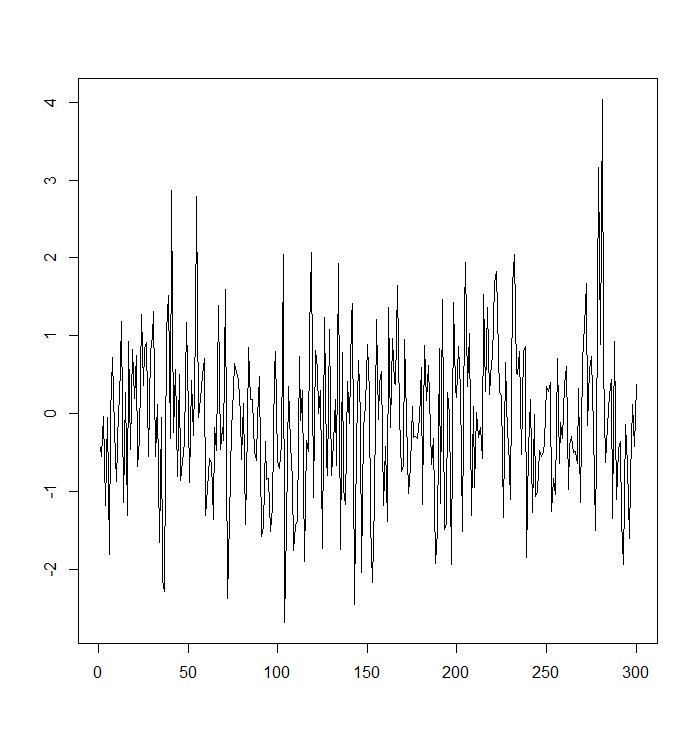
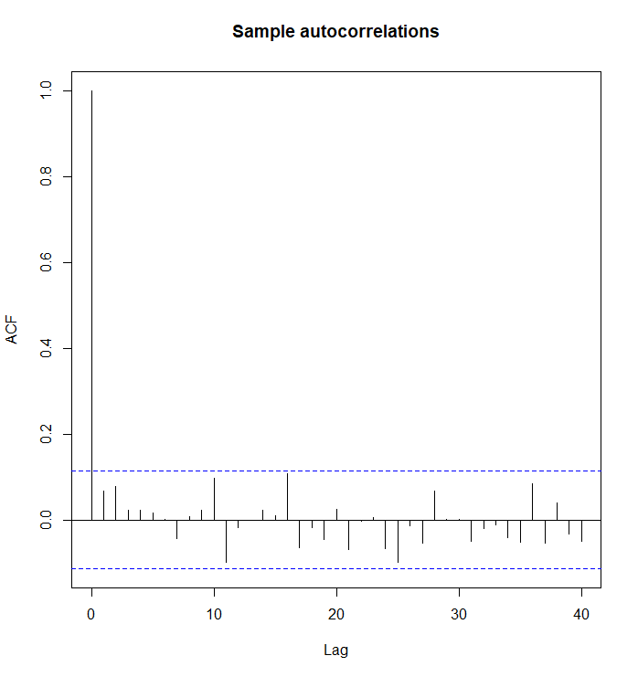

2 Some basic concepts for time series data
This section is a summarization of Sections 1–3 of Time Series Econometrics (TSE) material. Some additional details and illustrations can hence be obtained from those sections of the TSE material.
2.1 General objective in time series modelling
The aim of time series analysis is often to build a statistical model that represents the observed time series and its fluctuation over time. This typically involves examining the dependence structure among consecutive observations.
Autocorrelation (serial correlation) is a key property of time series and must be accounted for. This contrasts with cross-sectional data introduced in basic statistics courses, where random sampling generally ensures mutually independent error terms.
When analyzing time series data, a useful and natural first step is to plot the series and visually inspect its main characteristics alongside any underlying theory. Important questions to consider include:
- Is there a trend (do values tend to increase or decrease over time)?
- Are there seasonal effects (regularly repeating patterns related to calendar time)?
- Are there major outliers (observations far away from other data points)?
- Is the variability (variance) relatively constant over time?
- Are there any abrupt changes, such as breaks or regime switches?
Overall, these visual findings suggest which time series model could be appropriate. Once the parameters are estimated and the model’s compatibility with the data is assessed, the model serves for the three primary purposes:
- Providing a summarized description of the underlying data-generating process.
- Forecasting future values, potentially using information contained in other series (as later in this course).
- Exploring temporal and contemporaneous dependencies between time series (e.g., the relationship between inflation and stock market returns (examples in the TSE course) or the empirical illustrations above).
2.2 Some relevant transformations
As described above, in time series modelling a good first step is always to plot the time series under investigation. This provides an initial view of its main characteristics. If the observed series exhibits trends or seasonal patterns, appropriate transformations—such as differencing or seasonal adjustment—should be applied to mitigate them.
Common transformations in time series analysis include:
Lags: The first lag of \(y_t\) is \(y_{t-1}\), and the \(k\)th lag is \(y_{t-k}\).
Differencing: Perhaps the most vital transformation is the first difference, which represents the change between consecutive observations: \[\begin{equation*} \Delta y_t = y_t - y_{t-1}. \end{equation*}\]
Logarithms and log changes: Differencing is often combined with natural logarithms to handle exponential growth or stabilizing variance. The logarithmic change approximates the relative change when changes are small (given \(y_t > 0\)): \[\begin{equation*} \Delta \mathrm{log}(y_t) = \mathrm{log}(y_t) - \mathrm{log}(y_{t-1}) \approx \frac{y_t - y_{t-1}}{y_{t-1}}. \end{equation*}\]
- Financial returns: A prominent application of differencing, particularly in finance, is in calculating returns of different assets. While the simple return is the percentage change in price \(P_t\), the continuously compounded return (or log return) is exactly the first difference of the log prices \(p_t = \mathrm{log}(P_t)\): \[\begin{equation*} r_t = \mathrm{log} \Big(\frac{P_t}{P_{t-1}}\Big) = p_t - p_{t-1}. \end{equation*}\] Log returns possess advantageous properties, such as time-additivity, though dividend payments require specific adjustments in advanced financial applications.
Annualization: Growth rates are often annualized for comparison. For quarterly data, the annualized rate is \(400 \Delta \mathrm{log}(y_t)\), and for monthly data, \(1200 \Delta \mathrm{log}(y_t)\).
Detrending and seasonal adjustment. Besides differencing, trends and seasonality can be removed by regressing the series against time or seasonal indicators. For example, a linear trend can be removed by estimating: \[\begin{equation*} \widehat{x}_{t}=y_{t}-\widehat{\alpha}-\widehat{\boldsymbol{\beta}}t. \end{equation*}\] Seasonal adjustment can also be performed using seasonal dummy variables or trigonometric functions to isolate the non-seasonal component. Advanced detrending techniques, beyond these simple methods, are discussed in a separate and specialized econometrics literature.
2.3 Univariate stationary processes
The aim is to build a statistical model for the observed time series \(y_{1},\ldots,y_{T}\).
- In this section, we assume that we have one, univariate, time series. Multiple time series case will be mainly considered in the next Sections and thereafter throughout the material.
We view the observed series as a single realization of a random vector \(\boldsymbol{y}=\left(y_{1},\ldots,y_{T}\right)\). To build a model, we technically attempt to specify the \(T\)–dimensional joint probability distribution of this vector. Since observations in a time series are typically dependent (cf. conventional linear regression for cross-sectional data), specifying marginal distributions is insufficient; we must characterize the whole dependence structure.
A concrete and often used way to specify the joint distribution of \(\boldsymbol{y}\) in time series analysis is to:
specify a model equation that characterises the dependence structure of consecutive observations, and
combine this with a “suitable” distributional assumption.
Before we proceed to such concrete model equations in univariate and multivariate time series cases, it is useful to first briefly study some basic concepts of probability theory that form the foundation of time series analysis.
Stochastic process
From a theoretical standpoint, it is convenient to extend the random vector to a stochastic process \(\left\{y_{t};t=0,\pm1,\pm2,\ldots\right\}\), which is a collection of random variables indexed by time.
Crucial distinction: We effectively aim to learn the properties of the underlying process (the theoretical mechanism), but importantly we only have access to one and partial realization of that process (that is, the observed time series data at time points \(t=1,\ldots,T\)).
To make statistical inference possible from a single realization, we must make restrictive assumptions about the process, most notably regarding its stability over time.
Weak stationarity
A fundamental stability assumption is weak stationarity (covariance stationarity). A process \(y_{t}\) is called weakly stationary if its first and second moments are time-invariant. Specifically:
- Constant mean: \(\mathsf{E}\left(y_{t}\right)=\mu < \infty\) for all \(t\).
- Constant autocovariances: \(\mathsf{Cov}\left(y_{t},y_{t+h}\right)=\gamma_{h} < \infty\) depends only on the lag \(h\), not on the time index \(t\).
To obtain autocovariances, recall the covariance function of the process \(y_{t}\) is in general \[\begin{equation*} \gamma_{s,t}=\mathsf{Cov}\left(y_{s},y_{t}\right)=\mathsf{E}\left[\left(y_{s}-\mu_{s}\right)\left(y_{t}-\mu_{t}\right)\right], \quad t=0,\pm1,\pm2,\ldots\text{.} \end{equation*}\] In other words, a form of time invariance holds for weakly stationary processes: In addition to the constant expected value \(\mu\) over time, and the covariance function \(\gamma_{s,t}\) does not depend on the time indices \(s\) and \(t\) but only on their distance \(t-s\): \[\begin{equation*} \mathsf{Cov}\left(y_{t},y_{t+h}\right)=\gamma_{t,t+h}=\gamma_{0,h} \equiv \gamma_h < \infty \,\, \text{for all }\,\, h,\text{ }t=0,\pm1,\pm2,\ldots\text{ .} \end{equation*}\]
Properties of the autocovariance function \(\gamma_h\) under weak stationarity:
- \(\gamma_{0}=\mathsf{Var}\left(y_{t}\right) \ge 0\) (in principle only > 0).
- \(\left\vert \gamma_{h}\right\vert \leq\gamma_{0}\).
- Symmetry: \(\gamma_{h}=\gamma_{-h}\). That is, in this univariate (single time series process) case, we have (under weak stationary)
\[\begin{equation*} \mathsf{Cov}\left(y_{t},y_{t+h}\right)=\mathsf{Cov}\left( y_{t-h},y_{t}\right) = \mathsf{Cov}\left(y_t, y_{t-h}\right), \end{equation*}\] which implies that \(\gamma_{h}=\gamma_{-h}\). This expression shows where the term “lag” (“lag length”) \(h\) is coming from.
A useful practical aspect of weak stationarity is that the plausibility of this assumption can be investigated by looking at a graph of the observed time series: If the observations vary with constant variance around a fixed level, then weak stationarity appears a plausible assumption.
It is important to note that weak stationarity does not imply the absence of random variability. Even in a weakly stationary process, individual observations can vary substantially due to random variation (random shocks). What matters is that the statistical properties — the mean, variance, and autocovariance structure — remain constant over time.
2.4 Theoretical and sample autocorrelation
While autocovariance measures linear dependence, the autocorrelation function (ACF) is often more convenient as it is scale-independent. The theoretical autocorrelation at lag \(h\) is defined as: \[\begin{equation*} \rho_{h} = \frac{\mathsf{Cov}\left(y_{t},y_{t+h}\right)}{\sqrt{\mathsf{Var}(y_t)\mathsf{Var}(y_{t+h})}} = \frac{\gamma_{h}}{\gamma_{0}}. \end{equation*}\] The key properties include \(\rho_{0}=1\), \(\left\vert \rho_{h}\right\vert \leq1\), and symmetry \(\rho_{h}=\rho_{-h}\).
Typically, we also assume (if present and realistic) that autocorrelations decay as the distance between observations increases: \[\begin{equation*} \gamma_{h}\rightarrow0 \quad \mathrm{as} \quad h\rightarrow\infty. \end{equation*}\] In this case, the random variables \(y_{t}\) and \(y_{t+h}\) become nearly uncorrelated when the distance \(h\) is “large” – that is, when \(y_{t}\) and \(y_{t+h}\) are “far” from each other in time. Therefore, in practice it suffices to estimate the autocorrelation function \(\rho_{h}\) when \(h=1,\ldots,H\), and \(H\) is so large that \(\rho_{h}\approx0\) for \(h>H\).
Sample estimators
Since we cannot observe the true means and autocovariances (for some concrete time series), we estimate them using the realized data.
The sample mean \(\bar{y}=\frac{1}{T}\sum_{t=1}^{T}y_{t}\) estimates \(\mu\).
The sample autocovariance \(\mathsf{c}_{h}\) estimates \(\gamma_{h}\): \[\begin{equation*} \mathsf{c}_{h}=\frac{1}{T-h}\sum_{t=1}^{T-h}(y_{t}-\bar{y})\left(y_{t+h}-\bar{y}\right), \quad h=1,\ldots,H. \end{equation*}\]
The sample autocorrelation coefficient \(\mathsf{r}_{h}\) estimates \(\rho_{h}\): \[\begin{equation*} \mathsf{r}_{h}=\frac{\mathsf{c}_{h}}{\mathsf{c}_{0}}, \quad h=1,\ldots,H. \end{equation*}\]
Visual inspection and confidence bands
When plotting the sample autocorrelation function (correlogram) of the (single) time series (see an example in this section), statistical software typically includes two horizontal lines representing confidence bands.
- If \(\rho_{h}=0\) for all \(h>0\) (i.e., no autocorrelation), then any individual estimator \(\mathsf{r}_{h}\) has an approximately 95% probability of lying between the bands \((-1.96/\sqrt{T}, 1.96/\sqrt{T})\).
- If the individual sample autocorrelation coefficient \(\mathsf{r}_h\) falls outside these bands, there is statistically significant autocorrelation at the 5% significance level at lag \(h\).
- Significant spikes at specific lags (e.g., \(h=12, 24\) in monthly data) can suggest remaining seasonal patterns.
2.5 Univariate IID and white noise processes
To formalize econometric/statistical models for time series and, for example, derive relevant test statistics, we often need to define specific types of stationary processes.
The simplest building block in time series analysis/econometrics is the (weak) white noise process. A process \(u_{t}\) is called (weak) white noise, denoted \(u_{t}\sim\mathsf{wn}\left( \mu,\sigma^{2}\right)\), if:
- \(\mathsf{E}\left(u_{t}\right) =\mu\) (constant mean, usually 0 when \(u_t\) is used as an error or term or “shock”),
- \(\mathsf{Var}\left(u_{t}\right)=\sigma^{2}\) (constant variance),
- \(\mathsf{Cov}\left(u_{s},u_{t}\right)=0\) for all \(s\neq t\) (no autocorrelation).
Strict Stationarity
Weak stationarity only restricts the first two moments. A stronger condition, strict stationarity, requires that the entire probability structure of the process is time-invariant. Formally, the joint distribution of \((y_{t_{1}},\ldots,y_{t_{m}})\) must be identical to that of \((y_{t_{1}+h},\ldots,y_{t_{m}+h})\) for all time shifts \(h\).
Strict stationarity implies weak stationarity when assuming finite variance (and means and autocovariances).
Crucially, strict stationarity is preserved under transformations (e.g., if \(x_t\) is strictly stationary, so is \(x_t^2\)).
Stationarity in this material: Unless otherwise stated, the term “stationarity” refers to strict stationarity. In practice, however, visual inspection focuses on the observable characteristics of weak stationarity. We examine the plot to assess whether the mean, variance, and autocovariances appear stable, time invariant, over time, as these are the practical implications of a stationary process.
IID and NID processes
A specific, stronger form of white noise is the Independent and Identically Distributed (IID) process.
- If \(u_{t} \sim \mathsf{iid}(\mu, \sigma^2)\), the observations are statistically independent, not just uncorrelated. This implies strict stationarity.
- If we further assume that \(u_t\) follows a normal distribution, we denote this as NID (Normally and Independently Distributed): \[\begin{equation*} u_{t}\sim\mathsf{nid}\left(\mu,\sigma^{2}\right). \end{equation*}\]
Below is a simulated realization of a \(\mathsf{nid}(0,1)\) process. It exhibits purely random variation with no discernible patterns or trends.The length of the time series is 300 observations (\(T=300\)).
2.6 Testing autocorrelation
For the important special case of \(y_{t}\sim\mathsf{iid}\left(\mu,\sigma^{2}\right)\), it holds that \[\begin{equation*} \left(\mathsf{r}_{1},\ldots,\mathsf{r}_{H}\right)\underset{as}{\sim}\mathsf{N}\left(\boldsymbol{0},T^{-1}\boldsymbol{I}_{H}\right), \end{equation*}\] with a \(H\)-dimensional zero mean vector and \(\boldsymbol{I}_{H}\) \(\left(H\times H\right)\) denotes an identity matrix. This result can be used to test whether it is realistic to consider an observed time series as an uncorrelated time series process. Under the hypothesis to be tested (uncorrelatedness), the estimators \(\mathsf{r}_{1},\ldots.,\mathsf{r}_{H}\) are approximately independent with distribution \(\mathsf{N}\left(0,T^{-1}\right)\). Based on this, we get \[\begin{equation*} \mathsf{P}(\left\vert \mathsf{r}_{h}\right\vert \geq1.96/\sqrt{T})\approx 0.05, \end{equation*}\] a result that can be used to evaluate the significance of individual sample autocorrelation coefficients.
To obtain a joint test for several autocorrelation coefficients, that is to test the null hypothesis of no autocorrelation \(H_0= \rho_1 = \cdots = \rho_H = 0\), one can use the test statistic \[\begin{equation*} Q=T\sum_{h=1}^{H}\mathsf{r}_{h}^{2}\underset{as}{\sim}\chi_{H}^{2}, \end{equation*}\] whose large values would lead to rejection. Note that the asymptotic \(\chi_{H}^{2}\)–distribution follows from the distribution result above for \(\left(\mathsf{r}_{1},\ldots,\mathsf{r}_{H}\right)\) and the definition of the chi-squared distribution. In practice, an alternative and slightly different test statistic \[\begin{equation*} Q_{{\tiny LB}}=T\left(T+2\right)\sum_{h=1}^{H}\mathsf{r}_{h}^{2}/\left(T-h\right)\underset{as}{\sim}\chi_{H}^{2}, \end{equation*}\] called the Ljung-Box test statistic is preferred because in small samples its distribution has been found to be closer to the \(\chi_{H}^{2}\)–distribution than that of the test statistic \(Q\). It should be clear that both tests need \(H\) not to be too large compared to \(T\) to work well.
As an example, below we depict the sample autocorrelation function of the simulated and plotted \(\mathsf{nid}(0,1)\) series above. As expected, the sample autocorrelation coefficients are systematically inside the confidence intervals. Furthermore, when testing, say, the first 20 autocorrelation coefficients (that is selecting \(H=20\)), the value of the Ljung-Box test statistic is 16.597 with the p-value of 0.6789. Therefore, as in line with the assumed \(\mathsf{nid}(0,1)\) process, we cannot reject the null hypothesis of no autocorrelation.

The autocorrelation function can be used to reveal linear dependences between the observations, but not nonlinear ones (with the exception of Gaussian processes). To investigate the presence of potential nonlinear dependence over time, one (somewhat limited) approach is to test for autocorrelation in the squared observations.
Assuming \(y_{t}\sim\mathsf{iid}\left(\mu,\sigma^{2}\right)\) and \(\mathsf{E}\left( y_{t}^{4}\right)<\infty\), what was said above about the sample autocorrelations also holds for sample autocorrelations computed from the squared observations \(y_{t}^{2}\). In particular, the asymptotic result(s) remain valid when the autocorrelations are computed from squared observations, and also the Ljung-Box test has its indicated asymptotic distribution. In this context, however, the test is usually called the McLeod-Li test.
Investigating the autocorrelations between squared observations is of great interest, especially in the case of financial time series, which themselves often are (almost) uncorrelated.